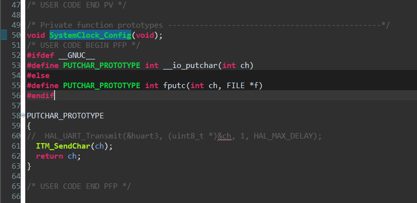
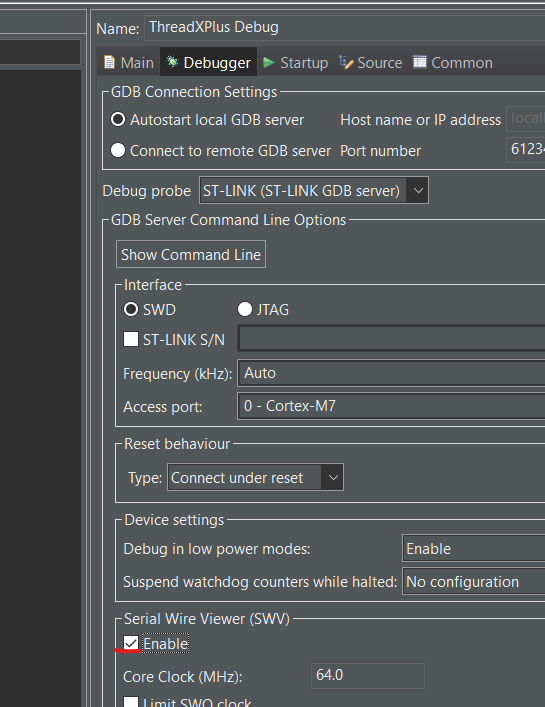
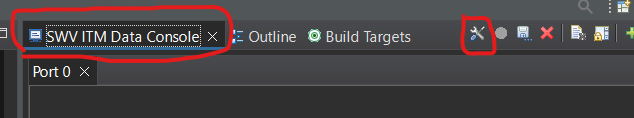
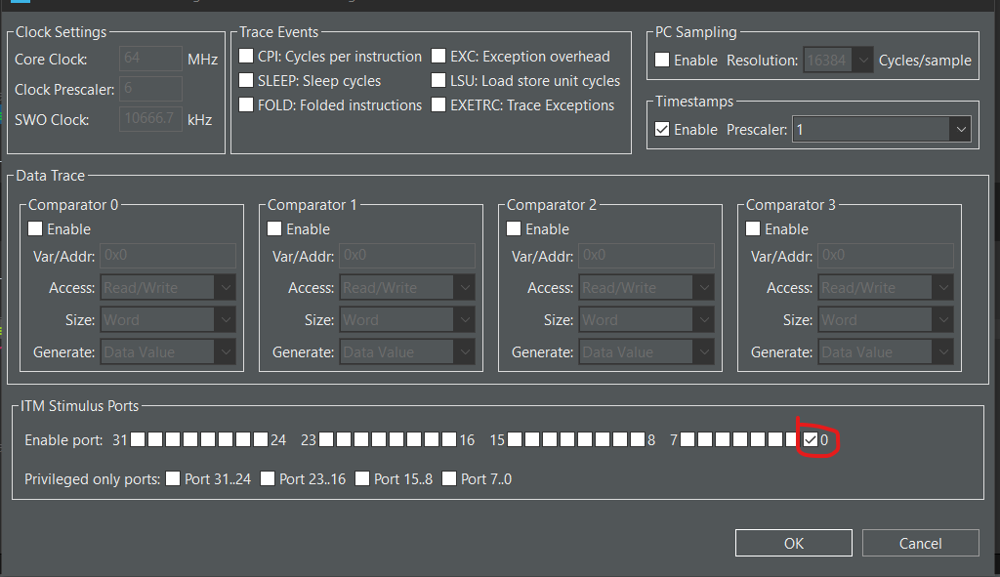
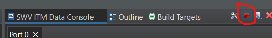

Config printf
git status
git add
git commit
- In file
Core/Src/main.cinsert the next code
#ifdef __GNUC__
#define PUTCHAR_PROTOTYPE int __io_putchar(int ch)
#else
#define PUTCHAR_PROTOTYPE int fputc(int ch, FILE *f)
#endif
PUTCHAR_PROTOTYPE
{
// HAL_UART_Transmit(&huart3, (uint8_t *)&ch, 1, HAL_MAX_DELAY);
ITM_SendChar(ch);
return ch;
}
after the SystemClock_Config function call 
2. Go to Run->Debug Configuration, new window open, go to tab Debugger, in the frame Serial Wire Viewer (SWv) you will found check box Enable, set it 
3. Run the debugger and make him stop on breakpoint, than go to Window->Show View->Other, in the window that open search SWV ITM Data Console, this will add new view to your screen SWV ITM Data Console, in this view press on the settings  New window will open, in the bottom you see frame ITM Stimulus Ports, you need to set the right checkbox that close to 0 and press OK 
4. in the view SWV ITM Data Console press on the start trace button 